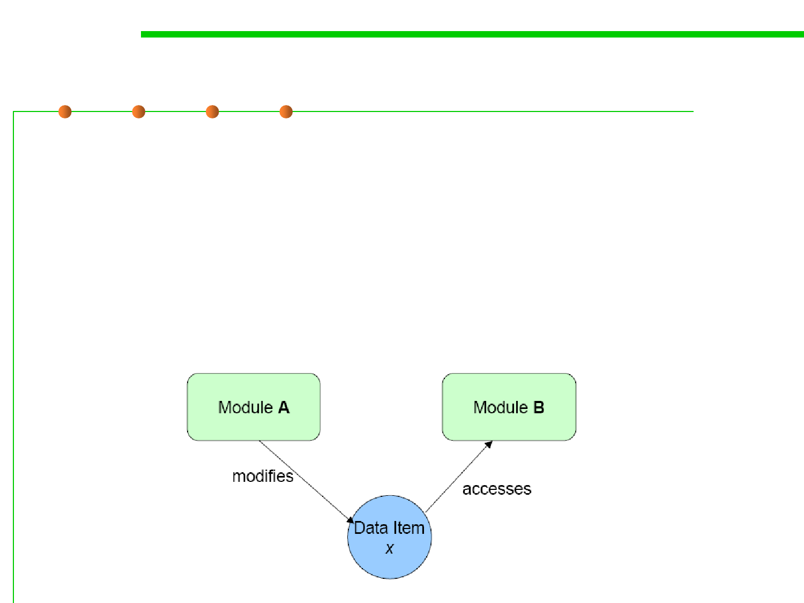

6.1 Metrics and Construction Principles for Maintainability
4. Explicit Interface
▪ Whenever two modules A and B communicate, this must be
obvious from the text of A or B or both (当A与B通讯时，应明显的发
生在A与B的接口之间)
– Decomposability, Composability, Continuity, Understandability (受影响的评价标准
：可分解性、可组合性、可持续性、 可理解性)
反例：